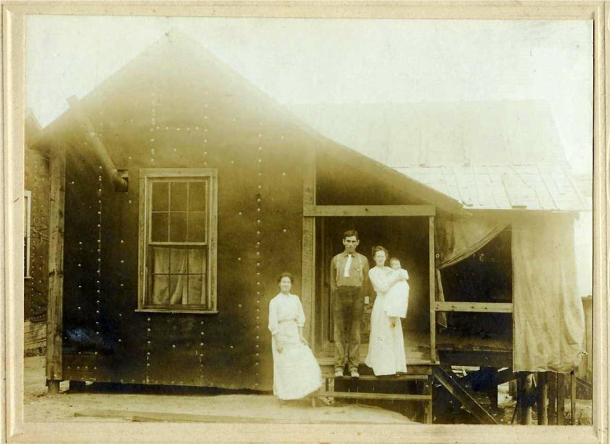

The Family Chronicle
No. 168 January 2, 2009
____________________________________________________________________

My mother and father set up housekeeping in Parksville, Tenn on February 11, 1911. Dad and Mum (holding Grace born Sept. 1913) with Aunt Janet (Watling). Uncle Ern Watling and Mac MacDonald also worked on the project.
A follow-up note from Barry MacKenzie
I also came across the 1840 Glenelg statistics today at the PANB. The document is entirely handwritten, although essentially in the same format as the document I transcribed for the 1834 statistics. This and the other document come from the Northumberland County Council records, held by the PANB. Access number is RS153 B 3 a 6.
Enjoy!
[Beginning of Document]
An Answer to the Schedule to An Act of Assembly Third Victoria, Intituled "An Act for ascertaining the
Population of this Province."
Parish of Glenelg in the County of Northumberland
Question 1st
Inhabited Houses 237
By how many families inhabited 244
Question 2nd
Houses now Building 11
Question 3rd
Other Houses uninhabited 15
Question 4th Persons including children of whatever age
Whites
Males above 16 years of age 393
Males under 16 years of age 297
Females above 16 years of age 272
Females under 16 years of age 389
People of Colour
Males above 16 years of age "
Males under 16 years of age "
Females above 16 years of age "
Females under 16 years of age "
Places of Worship
Church of England 1
Presbyterian "only one occupied" 2
Methodist "
Baptist "
Roman Catholic 1
Other Denominations "
Miles [sic]
Grist 3
Saw 1
Cleared Land
Estimated quantity 3828
Stock
Horses 249
Meat Cattle 1155
Sheep 943
Swine 852
There are no other matters which I think necessary to remark in Explanation of my Answer to Any of the above Questions.
I Donald McDonald the person appointed to take an Account of the Population of the Parish of Glenelg in the County of
Northumberland, do swear that the above Return contains to the best of my knowledge and Belief, full and true Answers to the Questions contained in the Schedule to An Act Intituled "An Act for Ascertaining the Population of this Province."
The above mentioned Donald McDonald Sworn this twenty first day of December 1840.
? Williston Justice of the Peace for the County of Northumberland Donald McDonald
[End of Document]
Napan Chapel
In response to my note, Barry
Mackenzie wrote:
Indeed, there was a Roman Catholic Chapel in Napan Bay many years ago to serve the RCs of the settlement. An article was written about it by Harold WJ Adams 11 years ago in a tribute to Napan, published as a section of the Miramichi Leader during the time of the Napan Agricultural Show. When I get back to Fredericton I will scan and send you the whole article, the details of which I cannot entirely recall.
What I can remember is that the Chapel was located on the property of Alvin Taylor, below the home of Leigh and Ruby MacInnis, about 2km below the Carmel Church. When the congregation was dissolved, the building was sold to either Alvin or a neighbour and was used as a shed. I can't recall for sure whether or not Adams said that it was still in use in 1997 or not, but there was a photo of the Chapel with the article I will be sending.
Hope this answers the preliminary questions - the article will answer the rest.
Correction
Hi
Don
Just
found your Chronicle 155 mentioning the "Roger Watling
website"
90%
of the data and in particular the bits you quote were written and
researched by Ken Watling (Also known as WATO)
enfantterrible@btinternet.com
If you get a chance, perhaps you could update that info as he
has done so
very much work including an absolutely massive
genealogy database that the
master of which is constantly
being updated.
Many
thanks and a happy new year
Roger
Storm-stayed
Do people still get s storm-stayed? I live in the city and do not hear the term anymore but it was a common term when I was growing up. It means, as the name says, not able to get home because of a storm – usually a storm that wreaked havoc with transportation. Often students from MRHS were storm-stayed in homes near the school when a school bus could not navigate the complete route. Stormed-in, on the other hand, meant that you could not leave home because of a snow storm.
The Family Chronicle (Copyright) is an occasional newsletter published by Don Glendenning and posted on the family website. It is intended to share information about my family, community and the times in which I grew up. While every effort is made to be accurate, errors are likely to occur. Comments, enquiries and information may be sent to 62 Queen Elizabeth Drive, Charlottetown, PEI, C1A 3A9. Tel: 902 892 5859. Email: don@glendenning.net Web: www.glendenning.net/don